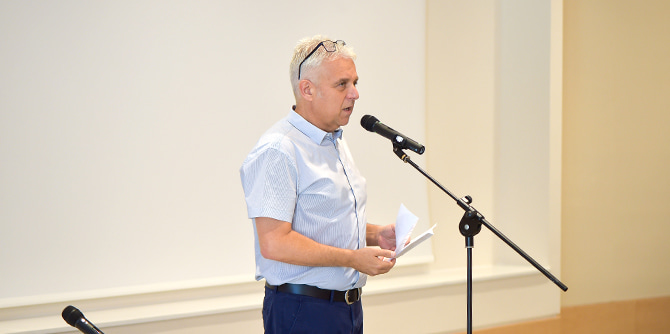
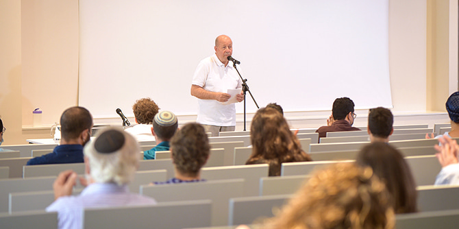
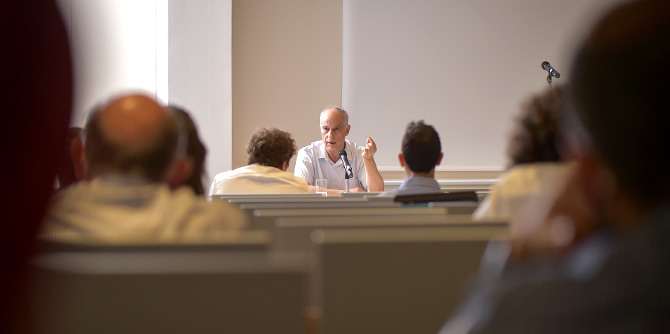

“We find ourselves at the beginning of a particularly challenging year, moving to our new campus and adjusting to the new realities of the coronavirus,” said
Danny Bar Giora, director of the Mandel School for Educational Leadership, in his opening address to the new and returning fellows. “Of all the ceremonies and events that have marked the opening of our new home,” he continued, “today is the most important and exciting: the moment when the heart of this place starts beating, and when learning – the very reason for the building’s existence – begins to take place within its walls. I wish us all that during this year, a year marked by instability and lack of clarity, disquiet and uncertainty, this place, the Mandel School for Educational Leadership, will serve as an anchor of stability, security, meaning, and joy…. We do not forget for a moment that our common goal is to make a difference and to improve Israeli society by contributing to the field of education.”

Addressing the two cohorts of fellows,
Moshe Vigdor, director general of the Mandel Foundation–Israel, said: “This is the first time that I am speaking on the opening day of a new academic year and cannot convey congratulations from Mort Mandel. Unfortunately, he passed away last October and we feel his absence every day. But I would like to congratulate you on behalf of
Professor Jehuda Reinharz, president of the Mandel Foundation, and of
Stephen Hoffman, chairman of the Foundation.”

This year’s opening lecture was delivered by
Meir Buzaglo, a professor of philosophy, researcher, intellectual, and public activist. Professor Buzaglo presented his ideas about the necessary conditions for ideational leadership, with particular regard to the spirit of the times.

Each year, the Mandel School for Educational Leadership, a joint venture of the Mandel Foundation and the Ministry of Education, accepts approximately 20 fellows with proven management skills, strong intellectual capabilities, and the commitment to lead change for the better in Israeli society and education. Over the course of the two-year program of study, the fellows develop their personal and professional visions, while deepening and expanding their professional knowledge and translating it into a sustainable plan of action that will make a real contribution to Israeli education and society.

{kind=link}
{kind=link}
{kind=link}
{kind=link}